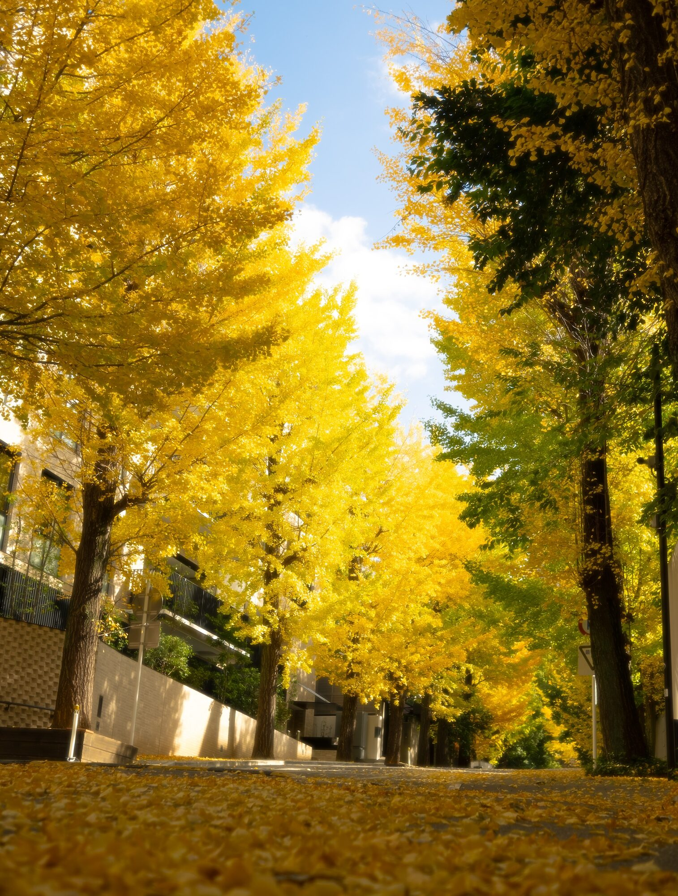
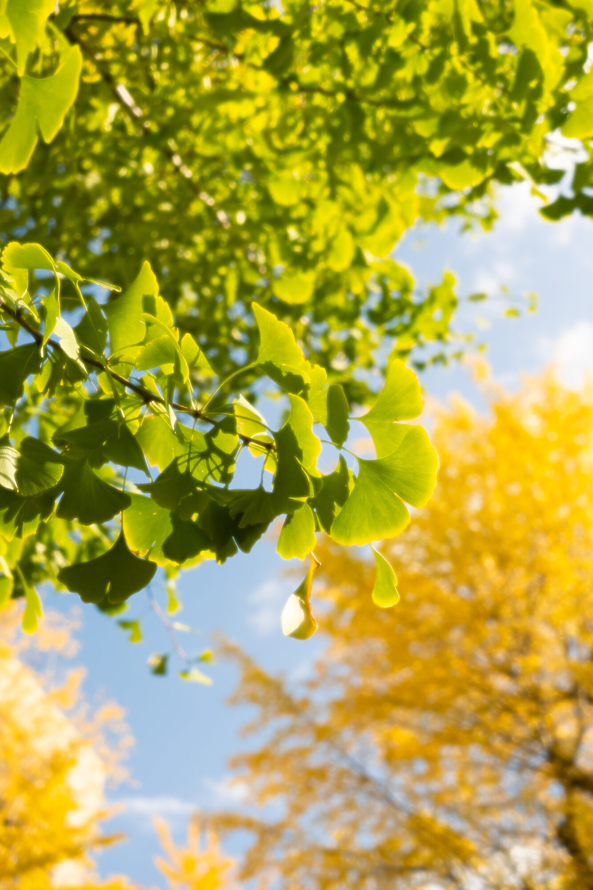
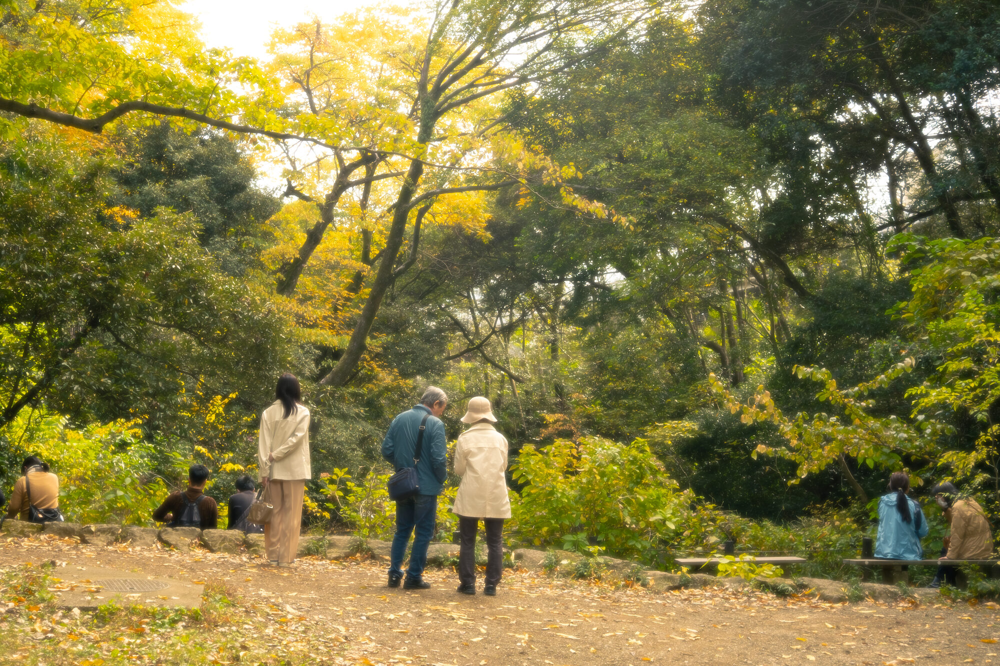
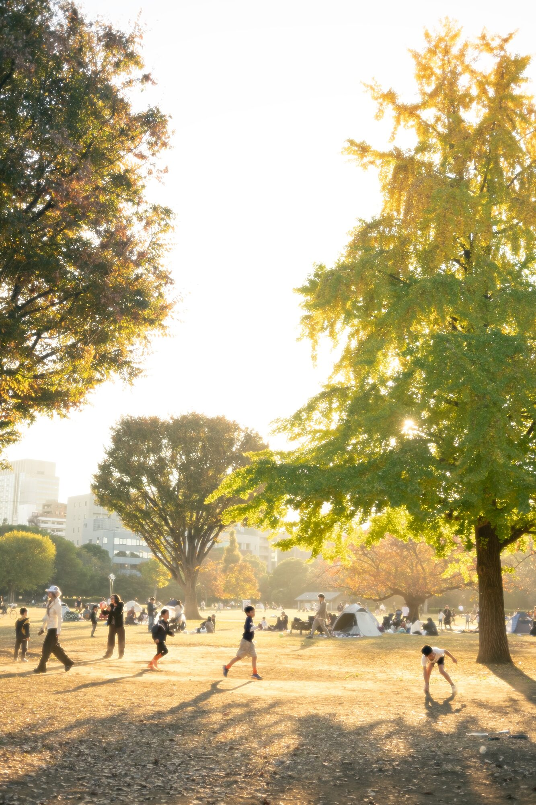

Tokyo, Fall 2025
My first real fall after living in Southern California for all of my life. The leaves changing colors is beautiful, as is the dissipation of the excruciating heat of a Japanese summer. For a while, I was only coming to Japan in the summers, so it had not even occurred to me that it could be temperate here. Simply lovely.



